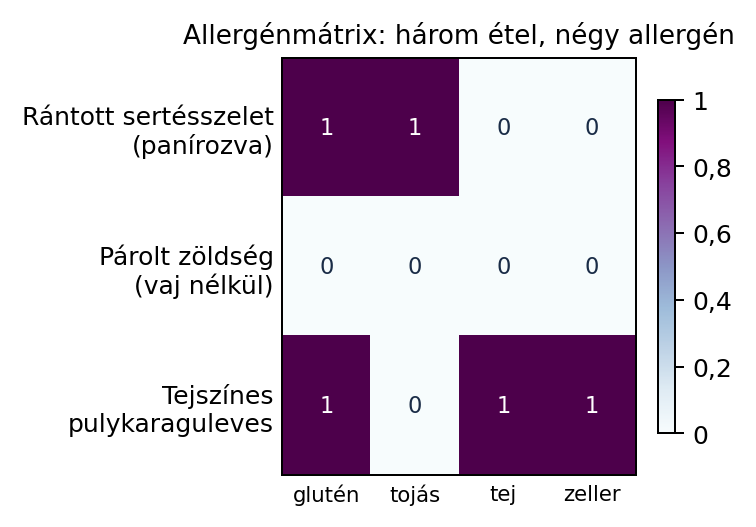

Képzeld el, hogy egy vendég az étteremben megkérdezi: „Van ebben az ételben tojás, glutén vagy tej? Allergiás vagyok.” Ha nem tudsz pontosan válaszolni, a vendég nem biztonságos ételt kap, és súlyos egészségkárosodás is történhet. A szakácsnak ezért nem elég finomat főznie: ismernie kell a nyersanyagokban rejlő összetevőket, és tudnia kell, miért kell az allergén tájékoztatást komolyan venni. Ebben az alfejezetben megtanulod, mi a különbség az allergia, az intolerancia és a cöliákia között, melyik a 14 jelölésköteles allergén, hol bújnak meg a konyhai gyakorlatban, és hogyan építhetsz allergénmátrixot az étlaphoz.
Gondolj két vendégre. Az egyik tejallergiás: egy szelet tejszínes mártás után perceken belül csalánkiütést kap, ajka megduzzad, és fulladni kezd. A másik laktózérzékeny: a tejszínes étel után fél órával hasfájást, puffadást, hasmenést tapasztal. Mindkettőnek tejes étel okoz panaszt, de egészen más a kockázat. Az elsőnél az apró mennyiség is azonnali, életveszélyes reakciót válthat ki; a másodiknál a panasz kellemetlen, de tejcukor nélkül általában nem életveszélyes. A konyhán ezért az allergiás vendég ételénél a keresztszennyeződést is szigorúan meg kell akadályozni, míg a laktózérzékeny vendégnél a tejcukor bevitele csökkenthető vagy kerülhető.
Definíció. Az ételallergia (food allergy) az immunrendszer kóros, gyors és túlzott válasza egy élelmiszer-fehérjére. A szervezet úgy kezeli a fehérjét, mintha kórokozó lenne, és védekező anyagokat, például antitesteket szabadít fel. A tünetek lehetnek enyhébbek (bőrviszketés, csalánkiütés, torokviszketés), vagy súlyosak: nehézlégzés, vérnyomásesés, ájulás, hányás, hasmenés. Az anafilaxia az allergiás reakció legsúlyosabb formája; több szervrendszer egyidejű, gyorsan romló érintettségét jelenti, és azonnali mentőhívás szükséges – ezt a Elsősegély konyhai sérüléseknél alfejezetben már láttad. Allergiánál az adott fehérje bármilyen kis mennyiségben problémát okozhat, ezért a „majdnem biztos, hogy nincs benne” hozzáállás a konyhán nem megengedhető.
Definíció. Az étel-intolerancia (food intolerance) nem immunrendszeri folyamat; rendszerint egy anyagcsere- vagy emésztési zavar. A leggyakoribb példa a laktózintolerancia: a szervezet nem termel elég laktáz enzimet, ezért a tejcukor (laktóz) a vékonybélben nem bomlik le, a vastagbélben pedig gázképződést, puffadást, görcsöt, hasmenést okozhat. A tünetek adagfüggők: valaki egy kis vajat még elfogyaszthat, más már attól is panaszkodik. Az intolerancia nem azonos a tejfehérje-allergiával; a tejallergiás vendégnek a tejfehérjét kell teljesen kerülnie, a laktózérzékenynek a tejcukrot.
Definíció. A cöliákia (coeliakia, gluténérzékenység) a gluténre adott immunrendszeri reakció, amely a vékonybél nyálkahártyájának károsodásával jár. A glutén a búza, a rozs, az árpa, a kétszeres búza és ezek keresztezései egyes fehérjefrakcióinak gyűjtőneve. A cöliákia nem azonnali, légúti tünetekkel járó allergia, hanem krónikus állapot: kezeletlenül felszívódási zavart, lefogyást, vashiányt, hasi panaszokat okoz. A kezelés a szigorúan gluténmentes étrend. A konyhán ezért a gluténmentes étel készítéséhez elkülönített eszközök, tiszta munkafelület és gondos nyersanyag-ellenőrzés kell, mert már egyetlen morzsa, liszt- vagy panírmaradék (milligrammnyi glutén) is károsíthatja a bélnyálkahártyát, akkor is, ha a vendég azonnal nem érez panaszt (ellenőrizendő: dietetikai ajánlás; a „gluténmentes” jelölés határa 20 mg/kg, 828/2014/EU). Az „alacsony gluténtartalmú” étel nem felel meg a cöliákiás vendég számára.
Megjegyzés. Az allergia, az intolerancia és a cöliákia orvosi diagnózis. A konyhai dolgozó nem állíthat fel diagnózist, de köteles a vendég által jelzett érzékenységet komolyan venni, a készétel allergéntartalmát pontosan ismerni, és a vendéget megfelelően tájékoztatni.
| Jellemző | Ételallergia | Laktózintolerancia | Cöliákia |
|---|---|---|---|
| Mi váltja ki? | Élelmiszer-fehérje (pl. tojás, tejfehérje, földimogyoró) | Tejcukor (laktóz) | Glutén (búza, rozs, árpa, kétszeres búza) |
| Melyik rendszer érintett? | Immunrendszer | Emésztőrendszer, enzimhiány | Immunrendszer, bélnyálkahártya |
| Kezdés | Gyorsan, percek alatt | Inkább órák alatt | Változó, krónikus lefolyás |
| Kis mennyiség is bajt okoz? | Igen, akár nyomnyi is | Nem mindig; adagfüggő | Igen, a teljes gluténmentesség a cél |
| Tipikus tünet | Csalánkiütés, nehézlégzés, vérnyomásesés | Puffadás, görcs, hasmenés | Haspuffadás, felszívódási zavar, vashiány |
| Életveszély lehet? | Igen, anafilaxia | Ritkán önmagában életveszélyes | Kezeletlenül szövődményes lehet |
Jogszabály. Az 1169/2011/EU rendelet II. melléklete sorolja fel a jelölésköteles allergéneket és összetevőiket. A vendéglátásban a nem előre csomagolt ételekre is kötelező az allergéntájékoztatást biztosítani, akár írásban, akár jól elérhető szóbeli tájékoztatással (a hazai részletszabály ellenőrizendő). A lista a rendelet alapján tanulási célú felsorolás; a kiadás előtt ellenőrizni kell a hatályos szöveget.
A 14 jelölésköteles allergén (1169/2011/EU II. melléklet alapján):
Az ábra a 14 allergént ugyanebben a sorrendben, egy-egy egyszerű ikonnal és rövid példával mutatja. Az ikon csak emlékeztető: a tájékoztatóban és a címkén mindig a teljes név a mérvadó, mert az ikonkészletek üzemenként eltérnek. Figyeld meg az 5. és a 8. ikont: a földimogyoró hüvelyes, a diófélék (mandula, mogyoró, dió) külön csoport.
A HTML-kiadásban egy ikonra mutatva megjelennek az allergén rejtett forrásai (a lenti táblázatból), így gyakorolhatod, melyik segédanyag mögött melyik allergén lapulhat.
Allergén. A 14 allergén nevét a konyhán mindig pontos, a vendég számára érthető magyar megnevezéssel használd. Ha egy ételben a fenti anyagok bármelyike megtalálható, azt jelezni kell a tájékoztatóban. Az allergén nem „eladói hiba”, hanem egészségügyi kockázat jelzése.
Az allergének nem csak a felismerhető alapanyagokban vannak jelen. Gyakran segédanyagokban, ízesítőkben, kész mártásokban, sütő- és panírozó keverékekben bújnak meg:
Allergén. Ezért a konyhán az allergén jelölést az alapanyagok címkéje és az étel technológiai lapja együttesen adja. Csak a saját, ellenőrzött receptúra mellett dönthetsz biztonságosan arról, mi van az ételben. A gyorséttermi és kész szószok esetén a gyártói címkét mindig el kell olvasni, mert az összetétel akár márkánként is változhat.
Definíció. A kereszt-reakció azt jelenti, hogy két különböző allergén fehérjéje annyira hasonlít egymásra, hogy az egyikre érzékeny szervezet a másikra is reagálhat. Például a nyírfa pollenre allergiás ember tünetet kaphat almától, mogyorótól vagy zellertől; a latexallergiás ember keresztszenzibilizált lehet banánra, avokádóra, gesztenyére. A diófélék között is gyakori, hogy több diófélére együtt jelentkezik érzékenység.
A „nyomokban tartalmazhat” felirat az előre csomagolt élelmiszer címkéjén azt jelenti, hogy az előállítás során az allergén kis mennyiségben kerülhetett az élelmiszerbe (például ugyanazon a gépsoron gyártottak mogyorós és mogyorómentes terméket). Ez nem kötelező eleme a címkének; ha a gyártó feltünteti, akkor a vendég számára azt jelenti, hogy az adott termék nem tekinthető garantáltan allergénmentesnek. A konyhán az ilyen termékeket allergiás vendég ételéhez nem használjuk fel, ha az adott allergénre érzékeny.
Kritikus pont. A keresztszennyeződés a konyhán akkor jön létre, ha egy allergént nem tartalmazó ételbe allergén kerül át (például rántott sajt után ugyanabban az olajban sütött hasábburgonya, amelybe így glutén és tej kerül; közös vágódeszka, kés, habverő; lisztporos kanál). Az allergiás vendég ételénél ez külön kritikus szabályozási pont lehet: a HACCP-tervben meg kell határozni az elkülönített tárolást, előkészítést, edény- és olajhasználatot, és a dolgozók betanítását.
Az alábbi táblázat a 14 allergént és a leggyakoribb rejtett forrásokat rendszerezi. Az „Rejtett forrás példák” oszlop nem teljes; a mindenkori termékcímke a mérvadó.
| Allergén | Gyakori közvetlen források | Rejtett források, segédanyagok |
|---|---|---|
| Glutén | búza, rozs, árpa, zab, tönköly | liszt, panírmorzsa, szójaszósz, sör, száraztészta, kuszkusz, habarás, rántás |
| Rákfélék | garnéla, homár, rákvaj | tengeri alaplevek, „tenger gyümölcsei” keverék, halászlé |
| Tojás | egész tojás, tojásfehérje, sárgája | bundázás, majonéz, felfújt, kész húspogácsák, tészták |
| Hal | friss, fagyasztott, füstölt, szárított hal | halszósz, halalaplé, worcestershire, halenyvvel derített bor vagy sör (ellenőrizendő), omega-3 kapszula – konyhai felhasználásban ritkán |
| Földimogyoró | mogyoróvaj, töretlen földimogyoró | olajos magkeverékek, csokoládé, müzli, curry, dresszing |
| Szójabab | tofu, szójaliszt, edamame | szójaszósz, szójalecitin, ételízesítő, leveskocka, növényi krém |
| Tej | tej, tejszín, vaj, sajt, joghurt, kefir | tejpor, savó, kazein, tejsavó, ételízesítő, mártáskeverék |
| Diófélék | mandula, dió, mogyoró | marcipán, nugát, granola, olajos magkeverék, dióolaj, pesto |
| Zeller | szárzeller, gumós zeller | ételízesítő, levespor, húskivonat, zöldségkeverék |
| Mustár | mustár, mustármag, dijoni mustár | dresszing, barbecue-szósz, majonéz, pác, salátaöntet |
| Szezámmag | szezámmag, tahini | panírmorzsa, péktermék, hummusz, grillezett zöldség |
| Szulfitok | kén-dioxid, szulfitok | aszalt gyümölcs, bor, ecetes zöldség, fehérítő, tartósítószer |
| Csillagfürt | csillagfürtliszt, fehérje | gluténmentes lisztek, vegán készítmények, sütőporos keverék |
| Puhatestűek | kagyló, osztriga, tintahal, polip | tengeri alaplevek, tenger gyümölcsei keverék, halszósz |
Az allergénmátrix segít átlátni, melyik étel melyik allergént tartalmazza. A mátrix sorai az ételek, oszlopai az allergének; a cella 1, ha az allergén jelen van, 0, ha nincs. Az alábbi egyszerű példa egy három tételből álló étlaphoz készül. A cellában lévő 1 és 0 jel az adott receptúra szerinti tanulási érték; az üzemi receptúra és az aktuális termékcímke dönt.

A mátrixhoz a konyhán tartozik egy szöveges kiegészítés: például a rántott sertésszeletnél a glutén és a tojás a panírból ered; ha a panírhoz tejes (pl. tejjel kevert) bundát használnak, a tej oszlopba is 1 kerül. A vaj nélkül párolt zöldség sorában a receptúra szerint egyik vizsgált allergén sincs. A tejszínes pulykaragulevesnél a tej a tejszínből, a glutén a habarásból, a zeller a zöldségalapból ered. A mátrixot minden receptúraváltozásnál frissíteni kell.
Allergén. Az allergénmátrix csak akkor megbízható, ha az alapanyagok címkeadatait és a keresztszennyeződés kockázatát is figyelembe vették. Egy „0” nem jelenti azt, hogy az étel garantáltan allergénmentes; azt jelenti, hogy a receptúra és a tervezett eljárás szerint az allergént nem tartalmazza, és a konyhán az elkülönített kezelés biztosított.
Cél. Allergénlista készítése és egy egyszerű allergénmátrix ellenőrzése egy választott ételhez.
Eszközök és anyagok. Az étel receptúrája, a felhasznált nyersanyagok címkéi, allergéntáblázat, íróeszköz vagy táblázatkezelő.
Biztonsági korlát. Ez a feladat dokumentációs gyakorlat; a vendégtájékoztatás élőben munkáltatói betanítást és üzemi HACCP-eljárást igényel.
Lépések.
Ellenőrzési pontok. A mátrix minden sora és oszlopa értelmezhető legyen; az 1-es értékekhez tudj megnevezni egy-egy konkrét nyersanyagot; a 0-s értéknél tudd, hogy a receptúra szerint az allergén nem kerül az ételbe, de a konyhai elkülönítést külön ellenőrizni kell. Ha bizonytalan vagy egy kész szósz összetételében, nézd meg a címkét, és ellenőrizd a gyártó honlapját.
Dokumentálás. Az allergénmátrixot mentsd el az étlap mellé; a változást dátummal és a változás okával vezesd.
Technológiai lap (kivonat): Tejszínes pulykaraguleves – allergénlista
| Nyersanyag (felhasznált) | Allergén a címke/összetétel alapján | Rejtett kockázat |
|---|---|---|
| Pulykahús | nincs a listából | – |
| Zellerszár, gumós zeller | zeller | – |
| Étolaj | nincs a listából | – |
| Vaj | tej | – |
| Főzőtejszín | tej | – |
| Fehér búzaliszt (habaráshoz) | glutén | – |
| Zöldségleves-kocka | zeller; esetleg glutén, szója, mustár (címke szerint) | rejtett kockázat: az ízfokozó nem allergén, de a címkét ellenőrizni kell |
| Fűszerek, petrezselyem | nincs a listából | – |
A leves allergénmátrix értékei: tej, glutén, zeller jelenlétet mutat; a zöldségleves-kocka révén a szója és esetleg a mustár is bekerülhet, ezért a végső mátrix a gyártói adatlap szerint módosulhat. Ha a leveskocka helyett friss zöldségalapot készítenek, a mátrixból a leveskocka által hozott elemek kikerülnek. Ez jól mutatja, hogy az allergénlista nem a „hagyományos recept” alapján, hanem a ténylegesen felhasznált nyersanyagok szerint készül.
Az allergénmátrix a gyakorlatban csak akkor igaz, ha a konyha a keresztszennyeződést is kezeli. Ha ugyanabban az olajban sütik a rántott sajtot, mint a csirkemellet, a glutént és a tejfehérjét nem jelző ételbe is kerülhet allergén. Ezért az allergénkezelés két részből áll: az étel receptúrája szerinti allergének feltüntetéséből és az üzemi eljárás szerinti óvintézkedésekből. Az elkülönített előkészítés, az egyéni védőeszközök, a külön edényzet és a tiszta munkafelület a Allergénkezelés a konyhán és a vendég tájékoztatása alfejezetben kerül részletes kidolgozásra.
Továbbvitt eredmény. A 14 allergén pontos neve, a rejtett források és az allergénmátrix felépítése alapozza meg a konyhai allergénkezelést és a fogyasztói tájékoztatást Allergénkezelés a konyhán és a vendég tájékoztatása alfejezetben. A laktózintolerancia és a cöliákia megkülönböztetése a diétás étrendek tervezésénél, a Gluténmentes, laktózmentes és allergiás étrendek részben lesz alap.
Az allergéntáblázat akkor jó, ha a technológiai lapon szereplő minden nyersanyaghoz tartozik allergénbesorolás, és a készétel allergénjeit a felszolgáló is pontosan tudja közölni. Az érzékszervi ellenőrzés itt nem elég: a minőség elsősorban a dokumentált receptúra és a címkeadatok egyezésében áll. Ellenőrizd, hogy a vendég által jelzett allergénre vonatkozó étel allergénmátrixa egyértelmű-e; ha nem az, nem szabad „biztos, hogy nincs benne” választ adni, hanem ellenőrizni kell, vagy olyan ételt ajánlani, amelynek összetétele egyértelmű.
Hiba. A szakács az allergiás vendégnek azt mondja:
„Szerintem ebben nincs tojás.”
Ok. A szakács nem ellenőrizte a panírozó keverék vagy a
mártás címkéjét, és a feltételezésre hagyatkozik.
Helyes gyakorlat. Ki kell kérni az étel aktuális
receptúráját vagy a termék címkéjét, és csak az ellenőrzött
allergénmátrix alapján tájékoztatni a vendéget. Ha a kockázat nem
zárható ki, ne ígérjük a mentességet.
Hiba. A gluténmentes ételhez ugyanazt a panírmorzsát
használják, mint a hagyományoshoz, csak éppen „kicsit
leporszívózzák”.
Ok. A panírmorzsa apró szemcséi glutént tartalmaznak,
és a sütőolajban is megmaradnak; a keresztszennyeződés a cöliákiás
vendégnél már elég a panaszhoz.
Helyes gyakorlat. A gluténmentes és a hagyományos
panírozás teljesen elkülönítve, külön edényekkel és friss olajjal
történjen, a HACCP-terv szerint.
Hiba. A tejallergiás vendégnek laktózmentes tejfölt
vagy tejszínt adnak, mert azt hiszik, hogy a laktózmentes termék
tejmentes.
Ok. A laktózmentes termékből csak a tejcukrot bontották
le, a tejfehérje (kazein, savófehérje) benne maradt, ezért
tejallergiásnak veszélyes.
Helyes gyakorlat. A vendég érzékenységét pontosan meg
kell ismerni: tejallergiánál minden tejfehérjét tartalmazó terméket
kerülni kell, a laktózmentes tejtermékeket is; laktózintoleranciánál a
laktózmentes tejtermék a vendég jelzése szerint adható.
Egy étteremben a vendég szólt, hogy földimogyoró-allergiája van. A felszolgáló a konyhára ment, és megkérdezte a szakácsot, van-e mogyoró a szószban. A szakács a saját emlékezetére hagyatkozott: „A receptben nincs mogyoró.” A vendég megkapta az ételt, percek múlva ajka zsibbadt, csalánkiütése lett, és mentőt kellett hívni. Kiderült, hogy a szószhoz használt kész currypor gyártója a feldolgozás során földimogyoróval közös vonalon dolgozott, és a termék címkéjén szerepelt a „nyomokban földimogyorót tartalmazhat” jelölés. A tanulság: feltételezésre allergéntájékoztatást adni tilos; mindig a címke és az üzemi dokumentáció a döntő. A vendégtájékoztatáshoz a rejtett forrásokat is ismerni kell.
Önellenőrzés – válaszok
1. feladat (A). Sorold fel a 14 jelölésköteles allergént, és mindegyikhez írj egy rejtett forrást is.
2. feladat (A). Párosítsd a panaszokat: laktózintolerancia, tejfehérje-allergia, cöliákia, földimogyoró-allergia. Készíts egy mondatot mindegyikhez arról, hogy a konyhán mire kell figyelni.
3. feladat (B). Egy rántott sertésszelet technológiai lapja szerint a panírozáshoz búzaliszt, tojás, zsemlemorzsa szükséges. A mártáshoz mustáros majonézt használnak. Állítsd össze az allergénmátrixot erre az ételre a 14 allergén oszlopaival, és jelöld az 1-es és 0-s értékeket.
4. feladat (B). Magyarázd el, miért kell az allergénmátrixon külön jelölni a „nyomokban tartalmazhat” és a keresztszennyeződés kockázatát, ha a vendég allergiás. Mondj egy konyhai példát.
5. feladat (C). Egy gluténmentes étteremben a szakács a zöldségleves-kocka helyett friss zöldségalapot készít. Az alapban zeller, sárgarépa, póréhagyma, petrezselyem, só, bors, babérlevél, víz van. Készíts allergénmátrixot ehhez az alapléhez, és hasonlítsd össze egy kész leveskockával (a csomagoláson glutén, szója, zeller, esetleg mustár szerepel). Melyik allergén tűnik el a mátrixból a friss alaplé használatával?
6. feladat (D). Egy vendég azt mondja: dióallergiája van. A konyhán a desszertekhez mandulalisztet, mogyorópasztát, diót és sima búzalisztet is használnak. Tervezd meg az eljárást a veszélyes keresztszennyeződés elkerülésére: melyik munkafelületet, eszközt, tárolót és jelölést használnád? Írd le lépésenként, és jelöld a kritikus pontot.
1. feladat (A) – lehetséges megoldás
2. feladat (A) – lehetséges megoldás
3. feladat (B) – lehetséges megoldás
A rántott sertésszelethez a panír miatt glutén (búzaliszt, zsemlemorzsa), tojás van; a mustáros majonéz miatt tojás és mustár; a majonéz alapja tojás, a mustár mustármag. Így az allergénmátrix 1-es értékkel tartalmazza: glutén, tojás, mustár. A többi 0, feltéve, hogy a majonéz nem tartalmaz tejterméket vagy rejtett szóját. A pontos mátrix a kész majonéz címkéje alapján ellenőrizendő.
4. feladat (B) – lehetséges megoldás
A „nyomokban tartalmazhat” jelölés azt jelenti, hogy a termék előállítása során az allergén kis mennyiségben előfordulhat, például közös gyártósor miatt. Az allergiás vendég ételéhez ilyen termék nem használható. A keresztszennyeződés a konyhán is létrejöhet: ha ugyanazzal a késsel vágják a diós süteményt, majd a natúr gyümölcsöt, a dióallergiás vendég ételébe is dió kerülhet. Ezért az allergiás rendelésnél külön eszközök, tiszta felület, saját edény és az eljárás dokumentálása szükséges.
5. feladat (C) – lehetséges megoldás
Friss zöldségalapnál a zeller jelen van, a glutén, a szója, a mustár, a szulfitok nincsenek jelen. A kész leveskockánál a zeller mellett glutén, szója, esetleg mustár, ízfokozó, színezék is szerepelhet a címkén. A friss alaplé használatával a glutén, a szója és a mustár eltűnhet a mátrixból, ha a fűszerezés nem visz be új allergént. Ez mutatja, hogy a feldolgozott alapanyagok cseréje házilag készítettre csökkentheti az allergénkockázatot, de a zellert továbbra is jelölni kell.
6. feladat (D) – lehetséges megoldás
A dióallergiás vendég desszertjéhez a diófélék közül különösen a mandula, a mogyoró, a dió, a pekándió jelent kockázatot, a kesudió és a pisztácia szintén. A konyhán a diómentes desszert készítéséhez:
Az ételallergia az immunrendszer kóros válasza egy élelmiszer-fehérjére; kis mennyiség is okozhat súlyos, akár életveszélyes anafilaxiát. Az intolerancia (például laktózintolerancia) emésztőenzim-hiány, és a tünetek adagfüggők. A cöliákia a glutén által kiváltott, a bélnyálkahártyát károsító immunrendszeri betegség, amely szigorú gluténmentes étrendet igényel. A vendéglátásban a 14 jelölésköteles allergén az 1169/2011/EU II. melléklete szerint: glutén, rákfélék, tojás, hal, földimogyoró, szójabab, tej, diófélék, zeller, mustár, szezámmag, szulfitok, csillagfürt, puhatestűek. A lista ellenőrzése kötelező a kiadás előtt. Az allergének gyakran rejtett forrásokban vannak jelen (panír, szószok, levesporok, ízesítők). A keresztszennyeződés minden allergiás rendelésnél külön kritikus pont, ezért a konyhának allergénmátrixot és dokumentált eljárást kell alkalmaznia. Továbbvitt eredmény. A 14 allergén és az allergénmátrix felépítése a Allergénkezelés a konyhán és a vendég tájékoztatása alfejezetben, a laktóz- és gluténmentes diéták tervezése a Gluténmentes, laktózmentes és allergiás étrendek alfejezetben hasznosul.